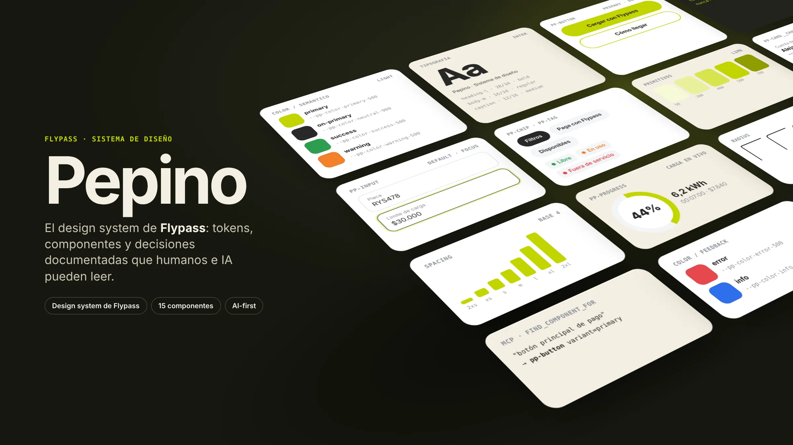
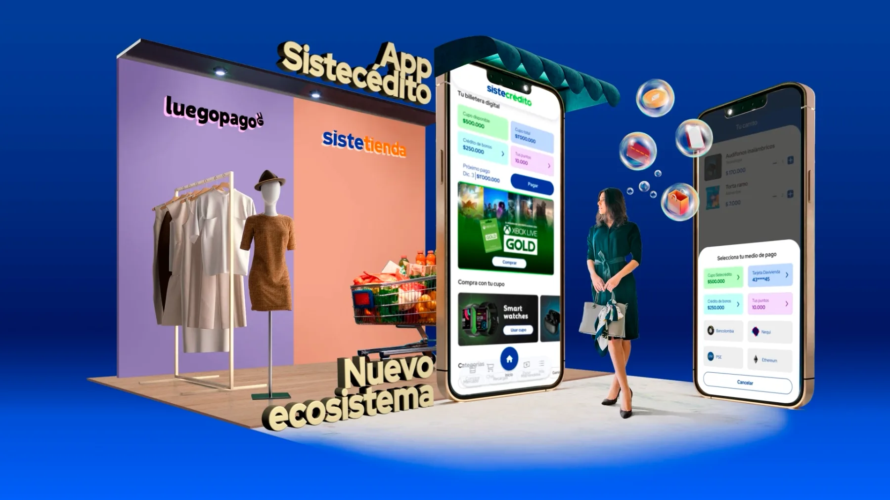

I design systems that humans and AI can both use.
5+ years designing digital products in fintech, mobility and the public sector. Today I take design systems AI-first: components, tokens and rules an agent can read to build on-brand interfaces, without losing focus on users and metrics.
Download CV
Selected work
Problem, decisions and outcome. Screens come straight from Figma, as handed off to engineering.

Pepino, Flypass's design system, ready to work with AI
I connected Pepino's components between Figma and engineering, and documented design decisions so AI agents generate on-brand screens on the first try.


EV charging in the Flypass app
End-to-end design of a new service: find a charging station, set up the charge, follow it live from the lock screen and get the receipt. All built with Pepino components.

Sistecrédito: app, web, payments and B2B for a BNPL fintech
Redesign of the app, website and payment gateway, plus Credinet for merchants. The floating payment button ended up used by 40% of site traffic.
From weeks to days at Medellín City Hall
Contextual research, journeys and step removal to digitize two internal processes, with a dedicated design system for the team.
Experience
Industrial designer by training, with a front-end background. That's why I design with how it gets built in mind.
UX Designer · Flypass (F2X)
AI-first design and the Pepino design system. Cross-cutting UX for app, web, parking, billing and fuel. EV charging and B2B Fuel & Charge.
UX/UI & Front-end · Agneex
Empathetic AI platform to detect psychosocial risk in HR: service blueprint, conversational flows, tokens and front-end support.
UX/UI Designer · Sistecrédito
BNPL app and web, payment gateway, B2B platform for partner merchants and innovation culture.
UI/UX Designer · i4Digital (Medellín City Hall)
Public-process digitization, design system and mentoring.
Junior Front-End Engineer · Newshore
UI components and transactional templates for airlines.
How I work
From discovery to production, with data and AI as a team tool.
Product & UX
- Discovery, interviews and usability testing
- Journeys, service blueprints, information architecture
- Rapid prototyping and validation
- Metrics: GA4, Hotjar, Clarity, A/B testing
Design systems
- Primitive → semantic → component tokens
- Figma variables and modes
- Governance, contribution and documentation
- WCAG accessibility and handoff
AI & code
- Claude Code, MCP, AI skills for UI
- Machine-readable contracts (DESIGN.md)
- HTML, CSS, JS · web components
- Figma Make, Supabase, GitHub